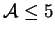
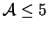

Apart from axisymmetric studies of cylinders--which cannot correctly account for buoyancy unless the imposed density gradient is antiparallel to the gravitational field (§3.2.5)--the only work on vapour transport across bounded gas-filled enclosures is the rather specific study by Rosenberger et al. (1997; §3.3.18). The following discussion therefore reviews theoretical results for the analogous single fluid heat transfer problem.
The exact solutions for the cuboid in the limit
 derived
in chapter 7 show a purely vertical flow, contradicting the general
conclusion of de Vahl Davis (1998)
that the end-walls necessarily give rise to a spanwise flow, even in the limit
of zero Grashof number; i.e.
derived
in chapter 7 show a purely vertical flow, contradicting the general
conclusion of de Vahl Davis (1998)
that the end-walls necessarily give rise to a spanwise flow, even in the limit
of zero Grashof number; i.e.  as
as
 .
Since this conclusion was based on inspection
of numerical solutions for
, it is submitted that the
horizontal surfaces must play a role in the generation of nonzero
.
Since this conclusion was based on inspection
of numerical solutions for
, it is submitted that the
horizontal surfaces must play a role in the generation of nonzero  .
.
The spanwise flow in finite cuboids was first predicted by the numerical solutions of Mallinson and de Vahl Davis (1973, 1977) and later observed in the experiments of Morrison and Tran (1978) and Hiller, Koch and Kowalewski (1989). In 1973, Mallinson and de Vahl Davis explained the effect purely in terms of the reduction of the convective disturbance of the temperature field by the viscous damping of the end-walls, but in 1977 they postulated a second mechanism--the inertial interaction of a rotating mass of fluid and a stationary solid wall--by analogy with the work of Pao (1970) on the fluid confined in a rotating cylinder with one stationary end-wall. (This problem has been recently revisited by Lopez 1998.) Their explanation is merely by analogy, however, and does not involve the basic mechanism. The reason why an axial (spanwise in the case of the cavity) velocity is generated is immediately obvious from inspection of Pao's formulation of the governing equations--the axisymmetric Navier-Stokes equations in terms of azimuthal velocity and azimuthal vorticity and stream-function. The azimuthal velocity in Pao's problem is generated by the rotating boundary but the boundary conditions on the azimuthal stream-function are homogeneous; the vorticity, and hence the axial flow, is produced by the source term corresponding to the centrifugal force.